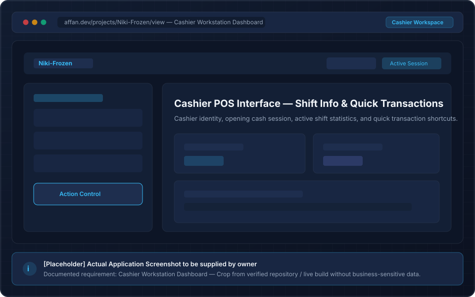
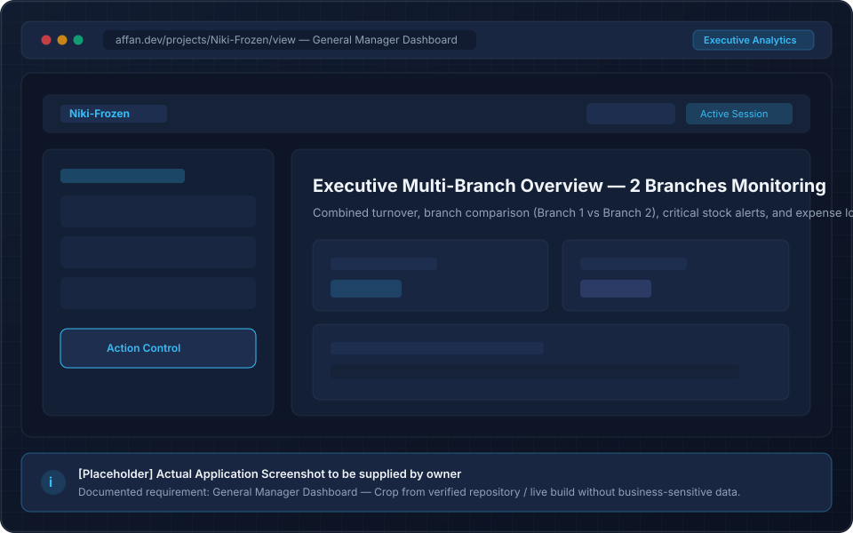
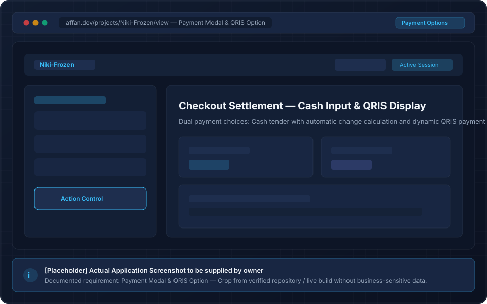
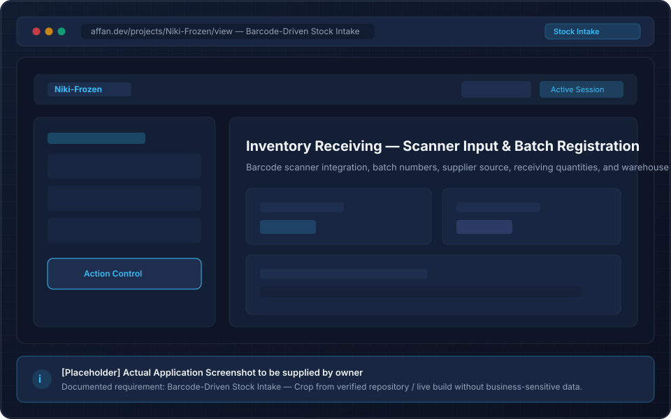
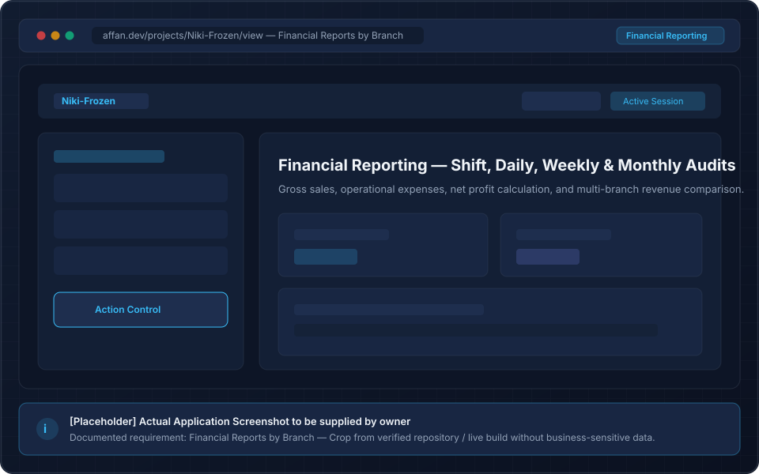
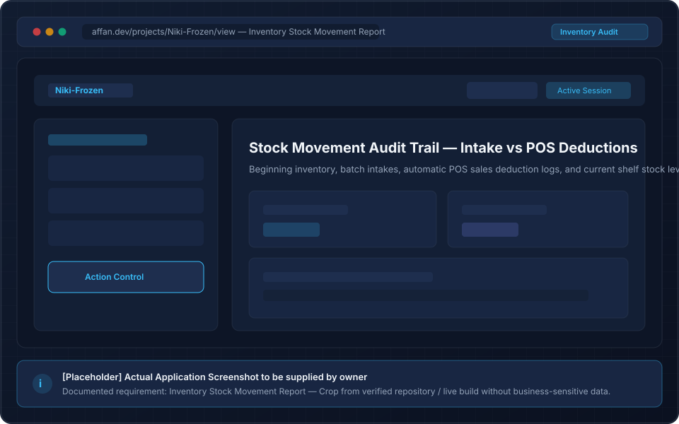

Problem & Context
The business context and operational pain points were identified in the project report across cashier workflows, stock tracking, and multi-branch financial coordination:
- Cashier and bookkeeping operations previously relied on disconnected tools and separate spreadsheets.
- Reported random transaction discrepancies of approx. IDR 6,000 – 20,000 between drawer cash and manual records.
- Stock movements across the 2 branches were cumbersome to track in real time.
- Absence of an automated early warning system for perishable goods approaching expiration.
- Multi-branch price variations and promotional discounts were difficult to synchronize.
- Centralized web application combining POS cashier transactions, barcode intake, and financial ledger.
- Automatic stock deduction upon transaction confirmation preventing double-entry drift.
- Automated expiry monitoring alerting Owner and Admin for items with < 7 days remaining shelf life.
- Branch-scoped pricing models and customized promotional campaigns.
- Granular multi-branch financial reports filtered by cashier shift, date, and branch ID.
Key Features
The system implements comprehensive operational modules designed for everyday retail transactions and managerial oversight:
Role-Based Access Control
Dedicated permission levels and view models for Owner, General Manager, Admin, and Cashier roles.
Point of Sale (POS) Flow
Streamlined cashier checkout supporting Cash payments and QRIS code generation with receipt printing.
Cashier Shift & Session Tracking
Records cashier identity, active shift duration, starting cash drawer, and shift reconciliation.
Barcode Stock Intake
Hardware barcode scanner integration for logging incoming frozen food batches directly into the ledger.
Expiry Warning System
Monitors product batch dates and triggers warning indicators for products expiring within fewer than seven days.
Automatic Stock Depletion
Instantly deducts purchased quantities from active branch inventory upon successful payment completion.
Multi-Branch Financial Reports
Filterable financial insights comparing daily, weekly, and monthly performance across both branches.
Branch-Specific Pricing & Promos
Allows branch managers to set localized retail price adjustments and bundle promotions.
Operational Expense Tracking
Dedicated ledger for recording operational store expenditures to ensure accurate net revenue calculations.
My Role & Individual Contributions
Niki Frozen was developed as a collaborative business and system engineering project. According to the documented project responsibilities, my primary individual contributions included:
Documented Personal Responsibilities
Verified Project AllocationDeveloped the cashier dashboard interface, active session monitoring, and direct entry points to the POS screen.
Engineered the General Manager dashboard providing multi-branch sales KPIs, active shift statuses, and revenue highlights.
Built payment workflows handling Cash and QRIS display, and integrated barcode scanner input for accurate product logging.
Implemented batch registration, lot tracking, and the threshold-based alert system for products expiring within 7 days.
Built the operational cost entry interface to record branch expenses and support transparent balance reporting.
Co-designed ergonomic interface layouts, ensuring fast keyboard/touch interactions suited for busy retail counters.
Documented Test Results
The project report documents a structured test execution matrix covering role authorization, transaction calculation accuracy, stock depletion, and scanner handling. (Presented as documented evidence from the project report scenarios):
Documented Black-Box Test Results
Recorded in final project testing documentation.
Technology Stack
Core technologies confirmed in project implementation and documentation:
Laravel
PHP web framework powering MVC structure, Eloquent ORM, middleware authentication, and routing.
PHP
Server-side programming language handling transaction computations and business rule enforcement.
MySQL
Relational database storing multi-branch inventory, product lots, orders, and cashier shifts.
Hardware Integration
Support for USB/Bluetooth barcode scanners for rapid barcode input during stock intake and checkout.
Documented Application Gallery
High-fidelity wireframe mockups representing key modules and documented interfaces. Click on any item to view details:

01. Cashier Dashboard
Cashier workspace showing shift status, quick POS launcher, and session controls.

02. General Manager Dashboard
Executive overview with multi-branch analytics, active shifts, and revenue charts.
03. POS Transaction & Cart
Fast barcode scanning, dynamic cart computation, and branch-specific pricing.

04. Payment & QRIS Display
Cash tender calculation and QRIS display for customer checkout.

05. Barcode Stock Intake
Stock intake module recording incoming frozen goods via hardware barcode scan.
06. Product Batch & Expiry
Lot tracking and automated warning flags for goods expiring within less than 7 days.

07. Multi-Branch Financial Reports
Sales reconciliation, cash drawer tracking, and daily/weekly/monthly revenue reports.

08. Stock Inventory Reports
Branch stock ledger monitoring quantities, lot allocations, and inventory turns.
09. Operational Expense Menu
Expense logging module allowing supervisors to record utility and operational costs.
ConcertTix — Concert Ticket Booking
A web-based concert discovery and ticket purchasing platform with multi-category facilities.